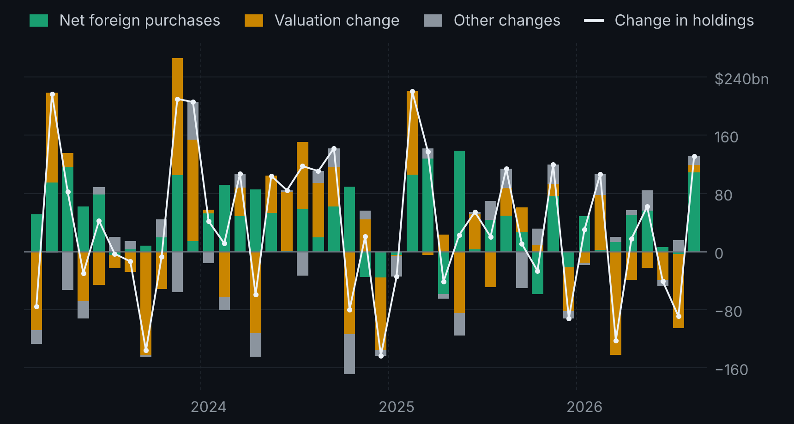
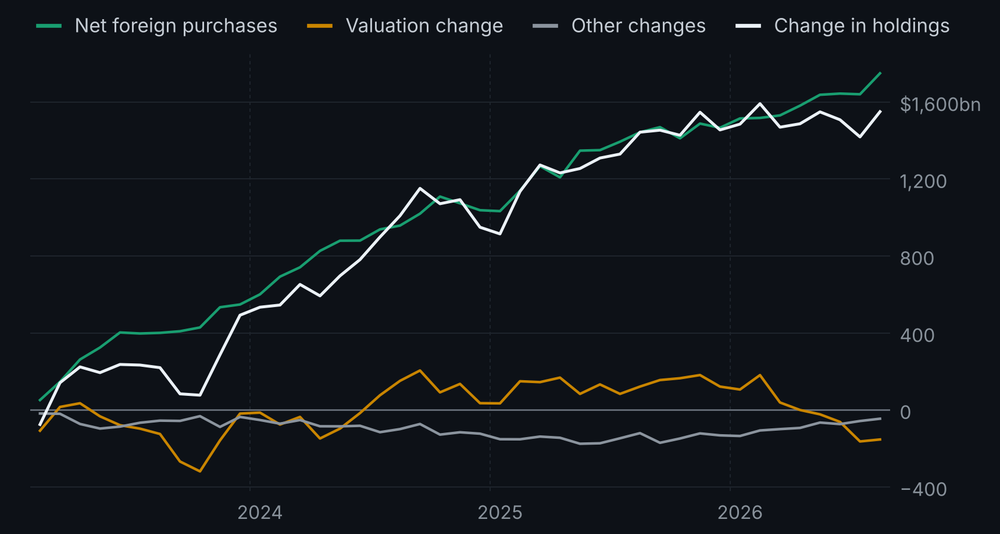
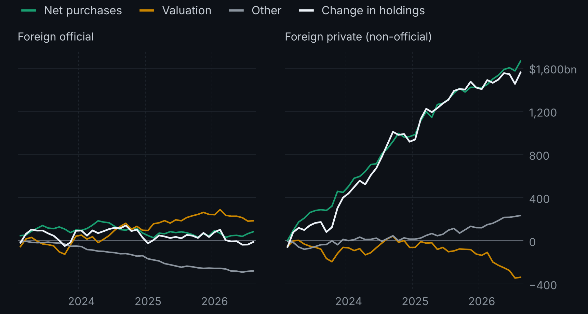

Follow-up to Who Holds the Treasuries Held Abroad?.
Treasury ownership · Working note · Draft
Selling or Repricing?
Foreign holdings of long-term Treasuries, February 2023 to August 2026
When the dollar value of foreign holdings of long-term Treasuries changes in a month, how much is foreigners buying or selling, and how much is bond prices moving?
Holdings are measured at market value. When yields rise, bond prices fall and holdings shrink even if nobody sells, so a headline that reads every fall in holdings as foreigners dumping Treasuries can be wrong. The accounting identity is simple:
holdings change = net purchases + valuation + other
Treasury and the Federal Reserve publish the first three. "Other changes" is what is left: reclassifications, revisions and estimation differences. It is a remainder, not evidence of any particular cause. This note replicates the decomposition the Fed already publishes (FEDS Note, 21 May 2026) for all, official and private foreign holders, and reads it.
One month: July 2026
Foreign holdings of long-term Treasuries fell by $89.1bn. Net foreign selling was only $3.6bn. Valuation losses were $101.6bn, and other changes added back $16.0bn. Almost all of the fall was prices, not selling.

The whole period
| Change in holdings | Net purchases | Valuation | Other | Months moving opposite to purchases | |
|---|---|---|---|---|---|
| All foreign holders | +$1,549.5bn | +$1,748.9bn | −$153.7bn | −$45.8bn | 10 of 43 |
| Foreign official | −$10.9bn | +$83.8bn | +$184.9bn | −$279.5bn | 20 of 43 |
| Foreign private | +$1,560.3bn | +$1,665.1bn | −$338.5bn | +$233.8bn | 9 of 43 |
- Over the whole period, buying dominated. Net foreign purchases totalled $1,748.9bn; holdings rose by $1,549.5bn. Private holders account for almost all of it.
- Month to month, the picture is noisier. In 10 of 43 months, total holdings moved in the opposite direction to net purchases.
- For official holders, holdings hide the buying. Official holdings fell by $10.9bn although officials were net buyers (+$83.8bn) and valuation added $184.9bn, because other changes subtracted $279.5bn.

An open question, not a finding
Private holders' other changes (+$233.8bn) almost mirror official holders' (−$279.5bn). They do not move together month by month, so this is not a simple monthly reclassification. Valuation plus other changes is similar for both groups (−$94.6bn official, −$104.7bn private); what differs is how that total splits between the two. That points first to how valuation is estimated for each holder group, before any story about investor behaviour.

What the data cannot tell you
- Who the owners are. Country attribution can reflect a foreign custodian’s location when the ultimate holder is not visible to the U.S. reporter. "Official" is a reporting class, not proof of a motive or of price-inelastic behaviour.
- Why investors bought or sold. The decomposition separates prices from transactions; it does not identify motives.
- Effects on yields. Nothing here estimates whether foreign buying moves Treasury prices.
- Earlier years. Before February 2023 the series lean more on Fed staff estimates, which is why this note starts there.
Checks and downloads
The source file is Treasury's CSLT archive, frozen with its checksum. Official plus private equals the total for holdings, purchases and valuation in every month, the identity holds in every row, and no months are missing. Not yet done: a cross-check against Treasury's monthly SLT Table 3 and a few months checked by hand.
Chart data (CSV) · Results (JSON) · Validation report. Data download, code, checks and this draft were prepared with AI assistance under my direction. Research and education only; not investment advice.